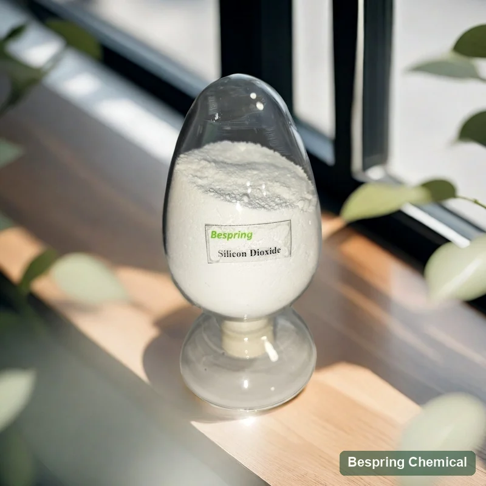
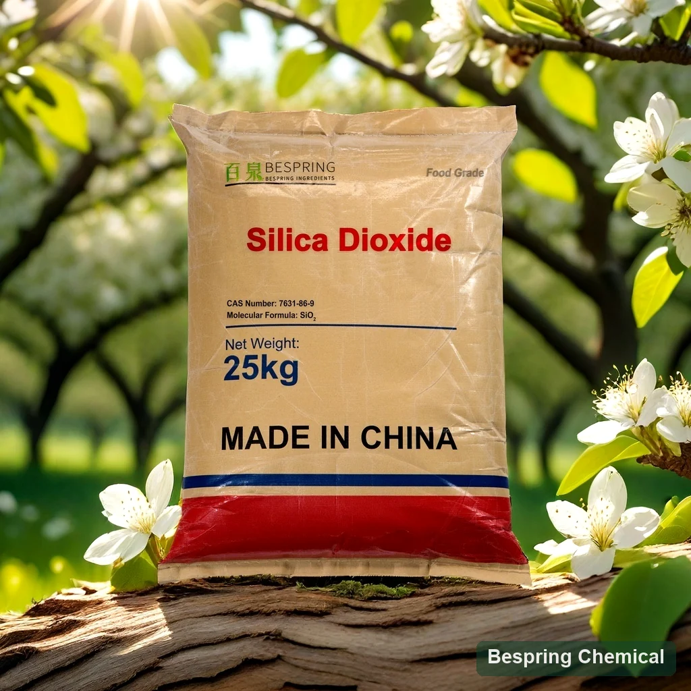
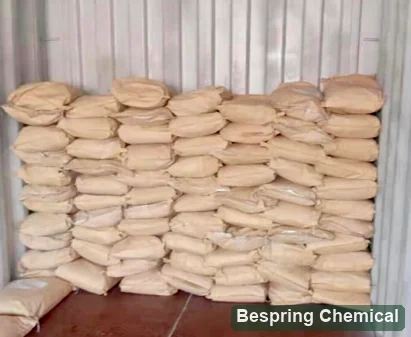
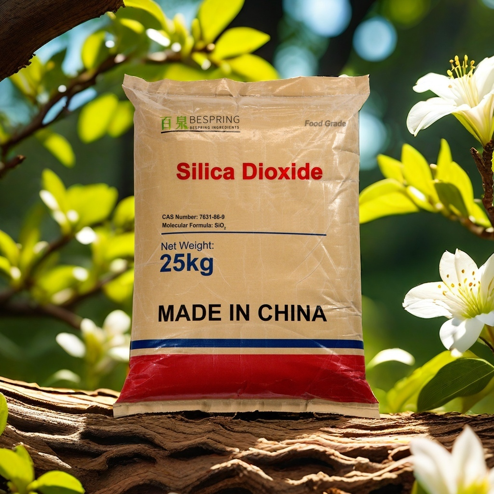

アンチキャッキンググレード
期待される処理および貯蔵条件の後でホストの粉で刻むべき流れそして抵抗を評価して下さい。 新しく粉の流れの結果だけ棚生命の性能を確立しません。
- 湿気および圧縮の後で流れて下さい
- 重要なケーキングの湿気
- 分離および塵
合成アモルファスシリカ・E551/INS 551
食品等級のケイ素の二酸化ケイ素、別名無形無水ケイ酸(E551/INS 551)は適した粉にされた食糧の反腐食の代理店として、使用されます。 Bespringは等級別にされた評価のための無水ケイ酸を供給します:反caking、キャリアまたはビール処理の等級を選ぶ前に製造の形態、食糧標準、表面区域および粒子サイズ方法を比較します。

製品イメージ・注文時にグレード・パッケージの確認
※最低注文は500kgです。ご希望のグレード、現在の注文条件、およびお見積りに必要な書類を必ずご確認ください。
アイデンティティ境界結晶ではなく、無形態
アンチキャッキング貯蔵後の流量評価
キャリア選定読み込みとリリースをチェックする
供給の参照*10/15のkg袋
化学名は完全等級ではありません
ザ・ザ・ザ・ザ・ザ・ザ・ザ・ザ・ザ・ザ・ザ・ザ・ザ・ザ・ザ・ザ・ザ・ザ・ザ・ザ・ザ・ザ・ザ・ザ・ザ・ザ・ザ・ザ・ザ・ザ・ザ・ザ・ザ・ザ・ザ・ザ・ザ・ザ・ザ・ザ・ザ・ザ・ザ・ザ・ザ・ザ・ザ・ザ・ザ・ザ・ザ・ザ・ザ・ザ・ザ・ FAO/WHO JECFAレコード CAS 551、CAS 7631-86-9として無形二酸化ケイ素を識別して下さい。その従来の構成はSiOです2. . . EFSA 2024レビュー E551 は、析出させた無光沢、無水ケイ酸ゲルおよび水溶液のような fumed およびぬれたプロセス形態を含む表面変更された合成の無形無形無水無水無水無水無水無水無水無水無水無水無水無水無水無水無水無水無水無水無水無水無水無水無水無水無水無水無水無水無水無水無水無水無水無水無水無水無水無水無水無水無水無水無水無水無水無水無水無水無水無水無水無水無水無水無水無水無水無水無水無水無水無水無水無水無水無水無水無水無水無水無水無水無水無水無水無水無水無水無水無水無水無水無水無水無水無水無水無水無水無水無水無水無水無水無水無水無水無水無水無水無水無水無水無水無水無水無水無水無水無水無水無水無水無水無水無水無水無水無水無水無水無水無水無水無水無水無水無水無水無水無水無水無水無水無水無水無水無水無水無水無水無水無水無水無水無水無水無水無水無水無水無水無水無水無水無水無水無水無水無水無水無水無水無水無水無水無水無水無水無水無水無水無水無水無水無水無水無水無水無水無水無水無水無水無水無水無水無水無水無水無水無水無水無水無水無水無水無水無水無水無水無水無水無水無水無水無水無水無水無水無水無水無水無水無水無水無水無水無水無水無水無水無水無水無水無水無水無水無水無水無水無水無水無水無水無水無水無水無水無水無水無水無水無水無水無水無水無水無水無水無水無水無水無水無水無水無水無水無水無水無水無水無水無水無水無水無水無水無水無水無水無水無水無水無水無水無水無水無水無水無水無水無水無水無水無水無水無水無水無水無水無水無水無水無水無水無水無水無水無水無水無水無水無水無水無水無水無水無水無水無水無水無水無水無水無水無水無水無水無水無水無水無水無水無水無水無水無水無水無水無水無水無水無水無水無水無水無水無水無水無水無水無水無水無水無水無水無水無水無水無水無水無水無水無水無水無水無水無水無水無水無水無水無水無
結晶の無水ケイ酸、diatomaceousの地球、無水ケイ酸の発煙および表面修飾された産業無水ケイ酸はこの食品添加物であるために劣らない。厳密な提供された等級のための製造の形態、表面処理および食品等級の状態の宣言を要求して下さい。CASは単独で特定の食糧のための純度か許可を示すしません。
必要な機能から始めて下さい
期待される処理および貯蔵条件の後でホストの粉で刻むべき流れそして抵抗を評価して下さい。 新しく粉の流れの結果だけ棚生命の性能を確立しません。
油吸油は、受入を決定した後に、積み荷の潜在能力、リリース、味、酸化およびフリーフローを示す。
高い表面面積および気孔の容積は単独の予測の選択性、ろ過圧力または飲料の損失ではないです。プロセス固有の試験を実行して下さい。
以下の二つの参考グレードは、確認済みの製造方法ではなく、想定用途により区別されています。いずれかをフュームドシリカ、沈降シリカまたはシリカゲルと分類する前に、最新のTDSを入手してください。米国のビール製造については、 21 CFR 172.480(c) 最終処理の前にろ過によって除去を要求して下さい。
完全な粉システムを測定して下さい
湿気の循環の後で軽食、塵、色の希釈および香りの保持へのテスト フロー、ベーキング、付着。
ホッパー放電、分離、分散性、沈殿物、口腔およびパッケージの安定性を測定して下さい。
低線量の均等性、液体のローディング、効力の回復、酸化、圧縮性および調整可能な規模を確認して下さい。
フローを追跡し、予想される湿気、振動、圧縮および貯蔵の下の明白は乾燥室のスクリーニングだけではないです。
使用レベルの境界: 食品カテゴリと機能によって、Codexと国民の規定は異なります。 米国では、 21 CFR 172.480(b) 効果が実証されている食品でのみアンチケークの使用を許可します。, 合理的に必要とせず、食品重量で2%以上. これは、米国法的な天井です。, 推奨処方用量ではありません; ビール安定装置と指定された吸着剤の使用は、別の条件を持っています. 実際の目的地と食品の規則を適用します.
商用参照データ
以下の商用参照値は、ビールろ過と栄養補助グレードを記述します。 彼らは、グレードの比較をサポートし、バッチの受け入れやすべてのE551規格に準拠するクレーム。 署名された仕様のアイデンティティ、限界、テスト方法に同意し、出荷COAを検証します。
小さな画面でテーブルを水平にスクロールして、両方のグレードと確認の要件を比較します。
スワイプするか、キーボードを使ってすべての列をご覧ください
| フィールド | ビールろ過等級* | 栄養補助食品グレード* | バイヤーの確認 |
|---|---|---|---|
| SiO2 点火の後で | ≥96% | ≥96% | 試金・点火方法の確認 |
| 乾燥/点火の損失 | ≤7% / ≤8.5% | ≤7% / ≤8.5% | 状態の時間、温度および基礎 |
| 鉛/arsenic | ≤5 / ≤3 mg/kg | ≤5 / ≤3 mg/kg | 現在の目的地と顧客の限界と比較して下さい |
| 「重金属をPbとして」 | ≤30 mg/kg | ≤30 mg/kg | 集合テスト;個々の鉛の結果か完全な要素のパネルではなく |
| 溶性塩 | ≤4% | ≤4% | 重要な場合はメソッドとイオンプロファイルを確認します。 |
| バルク密度 | <0.3 g/mL | <0.3 g/mL | ゆるみ/改ざんおよび調節を明確化して下さい |
| 表面区域 | ≥400 m²/g | 190–260 m²/g | BET法と脱ガス条件 |
| オイルの吸収 | コメントはありません。 | ≥2.0 mL/g | 液体、エンドポイント、方法および反復性 |
| 平均粒子サイズ | 8–20 μm | 10–20 μm | 方法と分布が見つかりません。 平均だけでは不十分です |
| 気孔の容積 | 0.9–1.6 mL/g | コメントはありません。 | 方法と穴サイズの分布 |
| pH | 4.5–9 | 6–8 | スラリー比、水および温度 |
| アイロン | 「25mg/kg」 | コメントはありません。 | 25 mg/kg は受諾のコンパレーターを持っていません; 最大の、典型的な価値か範囲に同意して下さい |
サイオ2 点火後にアッセイは、要素シリコンとしてではなく、または受容体に基づいて自動的に報告されます。点火の乾燥と損失の損失は、別のテストです。その温度、時間、サンプルの準備を定義する必要があります。鉄値「25mg / kg」は受諾記号を持っていません。認定された方法、粒子分布および製造フォーム宣言を資格の前に取得してください。
リストされた鉛の限界は5のmg/kgおよびarsenic限界です3のmg/kgです;これらは商業価値です、あらゆる宛先の標準が会う記述ではないです。あなたの標準によって要求される抽出か消化方法を使用してそれらを比較して下さい。 EFSA 2024 推奨事項 より堅い鉛、水銀およびarsenic限界およびアルミニウム限界のための呼出し;科学的な推薦は制定された法的指定と明白です。適用可能な場合の水銀、アルミニウムおよび他の顧客必須の結果を要求して下さい。
CAS、INS IDおよび仕様履歴、記録リスト モノグラフ20(2017)。
JECFAレコードのレビューSASのアイデンティティ、製造形態、粒子の特徴化および不純物の推薦。
EFSA の概要を確認する現在の米国アンチキャッキング、ビール安定装置および指定された吸着条件。
レビュー 21 CFR 172.480処方の検証
記録粒子の配分、脂肪/オイル、吸湿性、水活動、初期の流れおよびバルク密度。
流れ機能を測定して下さい、除去の角度、排出の時間および止められた制御に対するキャッキング力。
意図した包装の湿気の循環、熱露出、振動および圧縮を適用して下さい。
外観、味、分散性、アッセイ回復、機器の動作および法的使用を確認します。
ソース・ツー・ライン承認
合成アモルファス、非コーティング/非修飾シリカ、プロセスフォーム、CASおよびE/INS IDを確認します。
アッセイ、BET、気孔の容積、オイルの吸収、粒子の配分、密度、pHおよび不純物を一直線に並べて下さい。
実際のプロセス要件からアンチキャッキング、キャリア、またはビール加工グレードを選択します。
実質的な湿気、貯蔵、移動および処理による制御と比較して下さい。
食品カテゴリを確認し、レベル、ラベル/処理のステータスと宛先のドキュメントを使用します。
COAフィールド、サンプリング、パッケージング、保存寿命、トレーサビリティおよび変更通知を承認します。現在のTDS、SDS、代表者、およびバッチCOAを要求し、正確な製品、製造現場および有効期間の必要な証明書。
探検する 食品原料の塗布ガイド または比較して下さい 食品等級のtricalciumの隣酸塩 および 食品等級のマグネシウムの炭酸塩 異なる粉末やミネラルの要件のため。これらの成分は、等しい代替物として提案されていません。 参照 証明書の規模の指導 資料請求時
包装・加工写真
参考包装は10 kgおよび15 kgのクラフト紙袋です。パレットなしの20フィートコンテナの参考積載量は10 kg袋で5トン、15 kg袋で7.5–8.1トンです。見積もりでグレード、実かさ密度、パレット計画および積載を確認してください。画像の25 kgラベルは、どちらのグレードも25 kgで入手できる証拠ではありません。
最新のSDSに従い、直射日光や屋外環境を避け、乾燥し、換気された、汚染のない室温環境で保管してください。参考保存期間は製造から24か月です。発注前に、グレードごとの保管条件と出荷日を合意してください。



バイヤーの質問
食品等級の無形ケイ素の二酸化物は適した粉にされた食糧の反腐食の代理店として使用されます。選択された等級はキャリアか指定ビール安定の使用のために評価されるかもしれません。等級、意図された機能、食糧カテゴリおよび先の規則は適性を定める。
ここで扱う食品添加物としての物質は、結晶質シリカではなく合成非晶質シリカです。EFSAはE551を、非コーティングかつ表面未改質のものと説明しています。グレード別の声明書を入手してください。工業用または疎水性シリカのCOAだけでは、この食品用供給品の適合性を示せません。
いいえ。 表面積、気孔構造、粒子分布、バルク密度、ホストパウダーとの互換性が相互作用します。 同じ方法を使用してグレードを比較し、意図したストレージと処理条件の後にフローとケーキングを評価します。
いいえ。平均では、全分布を記述したり、一次粒子、集約体、凝集体を区別しません。分散手順、機器、D10/D50/D90などの適切な分布を要求します。マイクロメートル平均だけでは非ナノ宣言ではありません。
固結防止用グレードは、配合対象粉末中での流動性と固結について評価します。担体用グレードは、さらに、想定する液体担持量、液漏れ、放出および有効成分回収の要件も満たす必要があります。この二つの機能があることは、グレード間の互換性を意味しません。
いいえ。これは、完全な標準的な比較やCOAのバッチではなく、商用参照テーブルです。 製造フォーム、試金ベース、試験方法、および承認前に選択した電流規格に対するすべての適用不純物制限を確認します。
商用参照リスト10 kgと15 kgの袋、包装画像は25 kgのラベルを示しています。 引用された等級の実際のパックを確認します。 参照の最小注文は500 kgです。 現在の注文条件とコンテナの読み込みには、見積確認が必要です。
署名済みの仕様または TDS、SDS、および代表者 COA を要求し、出荷バッチ COA に従います。 必要な製造フォーム、粒子文字化、起源、アレルゲン、食品安全、ハラールまたはコシャー文書のいずれかを指定します。 可用性と製品、サイトおよび有効性のスコープを確認します。
状態 食品アプリケーションと目的地の市場, 必須の無水ケイ酸フォームと食品規格, 重要な純度と物理的なproperty限界, テスト方法, 数量, パッキング, 宛先ポート, 配送条件とタイミング. キャリアやビールの使用のために, 関連するローディングまたはプロセス要件を含みます.
更新内容: .
機能主導の調達
アプリケーション、標準および重要なパラメーターを要求するので、当社のチームは、グレード、文書、商用要件を審査することができます。
あなたの等級および宛先市場を私達に知らせて下さい従って私達はあなたの順序のためにどの文書が利用できるか確認してもいいです。
外部参照は、バッチ証明書または Bespring 製品仕様ではありません。